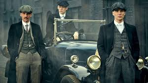
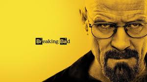
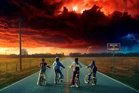
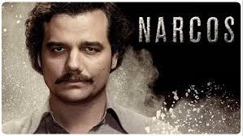
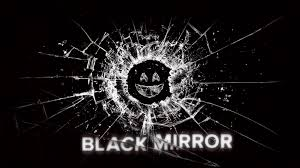

6 Classics on Netflix That You Should've Watched by Now
 By Pavan Sai Krishna...
By Pavan Sai Krishna...
In a span of a single decade, Netflix has grown into a global phenomenon. Started in the USA, now every country around the world is familiar with Netflix and spends their time ‘chilling’ with it. What helped Netflix to stand where it is now? Content. The shows and movies it produced have turned to be classics and helped Netflix to become a Billion-dollar venture. There are thousands of shows streaming on Netflix and it might sound ridiculous to discuss only 6. It’s true that there are hundreds of classics on Netflix as of now. But, these 6 shows you’ll be reading about are some of the most-watched and game-changing shows in television history. For this blog, we’ll see why you should start streaming these shows immediately (if you haven’t yet) and in later articles, we will discuss other masterpieces.
Peaky Blinders

This is one of the most iconic and stylish gangster series ever made. Although it is produced by BBC, Netflix acquired rights to air in the US and other countries. Peaky Blinders is a periodic show set in the post-World War 1 era. The story revolves around protagonist Thomas Shelby, played by Cillian Murphy, who is a war veteran and leader of the gang Peaky Blinders. The character Thomas Shelby is smart and charming portrayed flawlessly by Cillian Murphy. This show is perfect in every way, the screenplay, the cinematography, music, and remarkable performances by supporting characters. The narrative is so gripping that you are well immersed as soon as you start the first episode of the first season. If you are a fan of crime drama, then start streaming Peaky Blinders immediately.
Sherlock
If you love crime mysteries, then you should be familiar with the famous fictional detective Sherlock Holmes. The private detective is known for his intelligence and his methods of solving mysteries that come knocking at his door. The actual story of Sherlock Holmes was written in a 19th Century timeline. The BBC One adaptation brings Sherlock Holmes to life into the 21st century. Portrayed brilliantly by Benedict Cumberbatch, this modern era genius detective solves mysteries in fascinating ways. Due to its detailed narrative, each episode has high runtime and on average there are only 4 episodes per season. Although Netflix didn’t produce this masterpiece it owns the rights to air in all countries worldwide. Start streaming today and let get lost in the world of Sherlock.
Breaking Bad

It comes as a shock that there are people who haven’t watched Breaking Bad yet. With just 5 seasons, on the whole, this series changed television for the better. It follows around Walter White, played by Bryan Cranston, a chemistry professor who is diagnosed with lung cancer. Desperate to provide something to his family before his death, Walter White joins hands with Jesse Pinkman, played by Aaron Paul, to cook crystal meth. Breaking bad is well known for its character arch of the protagonist, Walter White. Although some might complain about its strong focus on drama, it helps us connect and relate with the characters well. If you haven’t watched this show yet, start streaming right away and throw Breaking Bad references into the conversations with your friends.
Stranger Things

Stranger Things played a key role in Netflix’s growth. Its script was rejected by many production houses before it was welcomed by the streaming giant. When the first season was released, it has broken many records by being the most-watched series. The story discusses the supernatural entities lurking in the town of Hawkins. Its main protagonist is Eleven, played by Millie Bobby Brown, and her friends, a group of teenagers. With its intense screenplay, nail-biting suspense, and convincing performances by everyone on screen, Stranger Things has become a favourite show for everyone. The show has won many awards and with its unique narrative, it stands as a cult classic in Netflix’s history.
Narcos

Everyone in the Americas knows who Pablo Escobar was. He was a Columbian drug lord who ruled the drug mafia and had an unparalleled reputation among cartels of South and Central America. Narcos depicts the life of Pablo Escobar, how he started his drug business, how he played the political games, how ruthless he was to those who came in his way and how he was killed in the pursuit. The show also depicts the influence of other cartels in Columbia post-Pablo Escobar. This Netflix original influenced many writers to explore new methods of storytelling. It opened many doors to talents around the world. To maintain the authenticity, the characters speak Spanish so you may have to get used to watching with subtitles.
Black Mirror

This has to be the most talked-about show Netflix has ever produced. Unlike the other shows mentioned, this show does not follow one character. It is an anthology series. Every episode has its own story unrelated to the next. The common link between all the episodes is technology. Every episode in Black Mirror deals with lives influenced by technology. The stories are so unique and creative that you have to constantly fight the urge to binge-watch the whole series. Some of these stories are so gut-wrenching and shocking that you may question your own reality.
Once again, this article does not intend to say these are the only important shows. It means that these must be watched immediately. If you haven’t watched these shows, then maybe it’s time you get started. If you have watched all six stay tuned for a new list of shows!